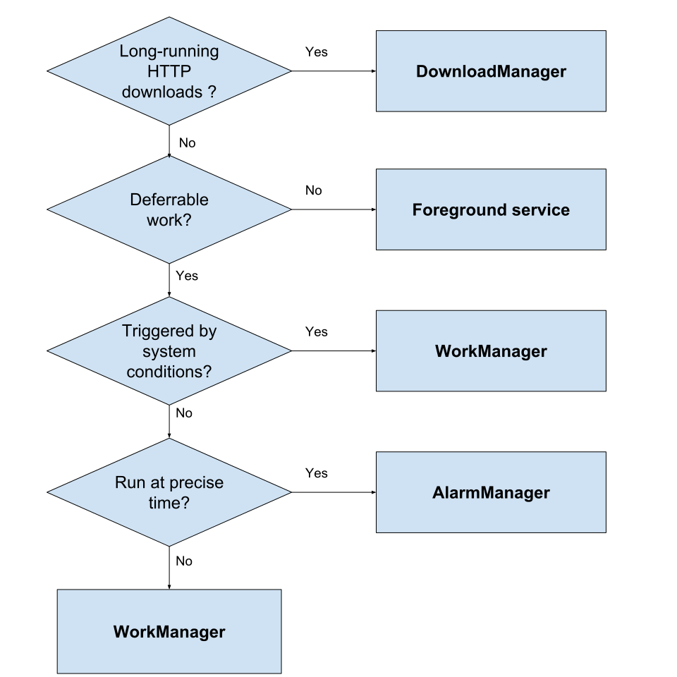
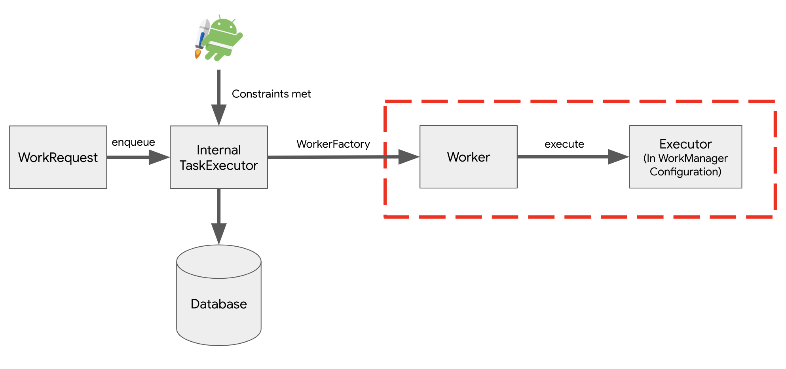
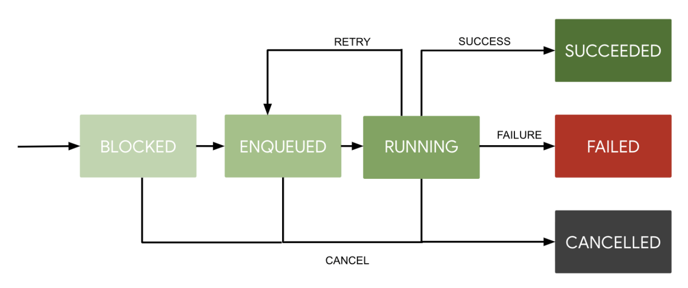
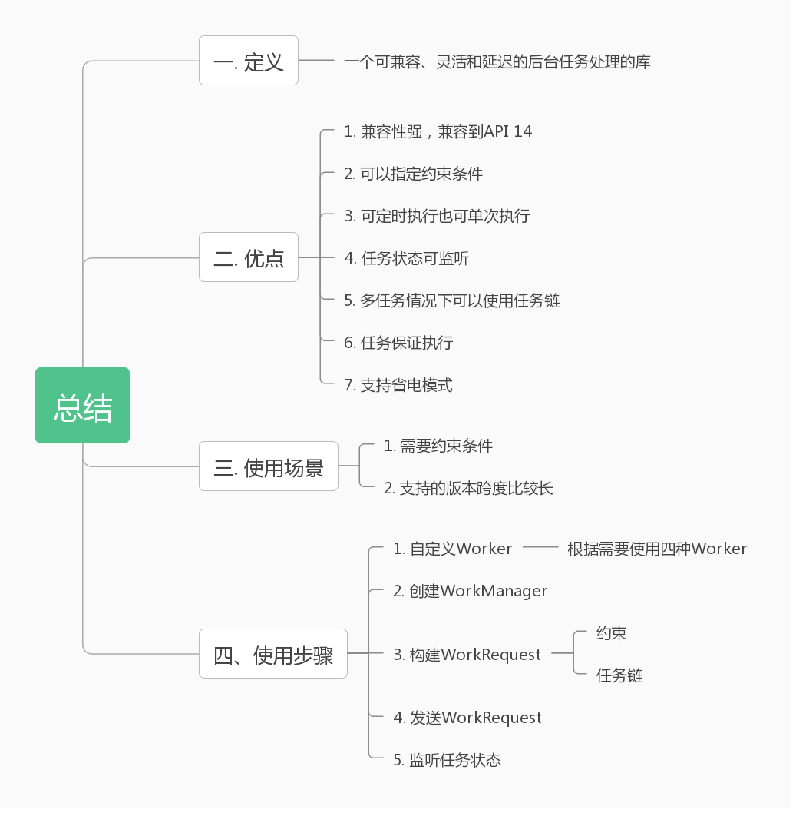

介绍 官方文档：WorkManager 官方教程 android-workmanager 中文官方介绍视频
1. 定义
WorkManager, a compatible, flexible and simple library for deferrable background work.
2. 选择 WorkManager 的理由
版本兼容性强，向后兼容至 API 14。
可以指定约束条件，比如可以选择必须在有网络的条件下执行。
可定时执行也可单次执行。
监听和管理任务状态。
多个任务可使用任务链。
保证任务执行，如当前执行条件不满足或者 App 进程被杀死，它会等到下次条件满足或者 App 进程打开后执行。
支持省电模式。
3. 多线程任务如何选择？

图片来自：官方文档 [译] 从 Service 到 WorkManager ，很好的一篇文章。
实战 第一步 添加依赖 1 2 3 4 5 6 ext.workVersion = "2.0.1" dependencies { // ...省略 implementation "androidx.work:work-runtime-ktx:$rootProject.workVersion" }
第二步 自定义 Worker 构建 Worker 之前，我们有必要了解一下 WorkManger 中重要的几个类：
类
作用
Worker
需要继承 Worker，并复写 doWork() 方法，在 doWork() 方法中放入你需要在后台执行的代码。
WorkRequest
指后台工作的请求，你可以在后台工作的请求中添加约束条件。
WorkManager
真正让 Worker 在后台执行的类。
除了这几个重要的类，我们仍需了解 WorkManger 的执行流程，以便于我们能够更好的使用：

主要分为三步：
WorkRequest 生成以后，Internal TaskExecutor 将它存入 WorkManger 的数据库中，这也是为什么即使在程序退出之后，WorkManger 也能保证后台任务在下次启动后条件满足的情况下执行。
当约束条件满足的情况下，Internal TaskExecutor 告诉 WorkFactory 生成 Worker。
后台任务 Worker 执行。
下面开始我们的构建 Worker，为了生成一张模糊图片，我们需要：清除之前的缓存路径、图片模糊的处理和图片的生成。我们可以将这三个步骤分为三个后台任务，三个后台任务又分别涉及到无变量情况、往外传参和读取参数这三种情况：
通常情况
1 2 3 4 5 6 7 8 9 10 11 12 13 14 15 16 17 18 19 20 21 22 /** * 清理临时文件的Worker */ class CleanUpWorker(ctx: Context, params: WorkerParameters) : Worker(ctx, params) { private val TAG by lazy { this::class.java.simpleName } override fun doWork(): Result { // ... 省略 return try { // 删除逻辑 // ...代码省略 // 成功时返回 Result.success() } catch (exception: Exception) { // 失败时返回 Result.failure() } } }
输出参数
1 2 3 4 5 6 7 8 9 10 11 12 13 14 15 16 17 18 19 20 /** * 模糊处理的Worker */ class BlurWorker(context: Context, params: WorkerParameters) : Worker(context, params) { override fun doWork(): Result { //... return try { // 图片处理逻辑 // 图片处理逻辑省略... // 将路径输出 val outPutData = workDataOf(KEY_IMAGE_URI to outputUri.toString()) makeStatusNotification("Output is $outputUri", context) Result.success(outPutData) }catch (throwable: Throwable){ Result.failure() } } }
读取参数
1 2 3 4 5 6 7 8 9 10 11 12 13 14 15 16 17 18 19 20 21 22 23 24 25 26 27 /** * 存储照片的Worker */ class SaveImageToFileWorker(ctx:Context,parameters: WorkerParameters):Worker(ctx,parameters) { //... override fun doWork(): Result { //... return try { // 获取从外部传入的参数 val resourceUri = inputData.getString(KEY_IMAGE_URI) //... 存储逻辑 val imageUrl = MediaStore.Images.Media.insertImage( resolver, bitmap, Title, dateFormatter.format(Date())) if (!imageUrl.isNullOrEmpty()) { val output = workDataOf(KEY_IMAGE_URI to imageUrl) Result.success(output) } else { // 失败时返回 Result.failure() } } catch (exception: Exception) { // 异常时返回 Result.failure() } } }
第三步 创建 WorkManger 这一步还是挺简单的，MeModel 中单例获取：
1 2 3 4 5 class MeModel(val userRepository: UserRepository) : ViewModel() { //... private val workManager = WorkManager.getInstance() // ... }
第四步 构建 WorkRequest WorkRequest 可以分为两类：
名称
作用
PeriodicWorkRequest
多次、定时执行的任务请求，不支持任务链。
OneTimeWorkRequest
只执行一次的任务请求，支持任务链。
1. 执行一个任务
1 2 val request = OneTimeWorkRequest.from(CleanUpWorker::class.java) workManager.enqueue(request)
2. 执行多个任务
1 2 3 4 5 // 多任务按顺序执行 workManager.beginWith(mutableListOf(OneTimeWorkRequest.from(CleanUpWorker::class.java))) .then(OneTimeWorkRequestBuilder<BlurWorker>().setInputData(createInputDataForUri()).build()) .then(OneTimeWorkRequestBuilder<SaveImageToFileWorker>().build()) .enqueue()
等等，假设我多次点击图片更换头像，提交多次请求，由于网络等原因（虽然我们的 Demo 没有网络数据请求部分），最后返回的很有可能不是我们最后一次请求的图片，这显然是糟糕的，不过，WorkManger 能够满足你的需求，保证任务的唯一性：
1 2 3 4 5 6 7 8 9 10 // 多任务按顺序执行 workManager.beginUniqueWork( IMAGE_MANIPULATION_WORK_NAME, // 任务名称 ExistingWorkPolicy.REPLACE, // 任务相同的执行策略 分为REPLACE，KEEP，APPEND mutableListOf( OneTimeWorkRequest.from(CleanUpWorker::class.java) )) .then(OneTimeWorkRequestBuilder<BlurWorker>().setInputData(createInputDataForUri()).build()) .then(OneTimeWorkRequestBuilder<SaveImageToFileWorker>().build()) .enqueue()
无顺序多任务 。
3. 使用约束
1 2 3 4 5 6 7 8 9 10 11 12 13 // 构建约束条件 val constraints = Constraints.Builder() .setRequiresBatteryNotLow(true) // 非电池低电量 .setRequiredNetworkType(NetworkType.CONNECTED) // 网络连接的情况 .setRequiresStorageNotLow(true) // 存储空间足 .build() // 储存照片 val save = OneTimeWorkRequestBuilder<SaveImageToFileWorker>() .setConstraints(constraints) .addTag(TAG_OUTPUT) .build() continuation = continuation.then(save)
可以指明的约束条件有：电池电量、充电、网络条件、存储和延迟等，具体的可以使用的时候查看接口。
以下则是我们Demo中的具体使用：
1 2 3 4 5 6 7 8 9 10 11 12 13 14 15 16 17 18 19 20 21 22 23 24 25 26 27 28 29 30 31 32 33 34 35 36 37 38 39 40 41 42 43 44 45 46 47 48 49 50 class MeModel(val userRepository: UserRepository) : ViewModel() { //... private val workManager = WorkManager.getInstance() val user = userRepository.findUserById(AppPrefsUtils.getLong(BaseConstant.SP_USER_ID)) internal fun applyBlur(blurLevel: Int) { //... 创建任务链 var continuation = workManager .beginUniqueWork( IMAGE_MANIPULATION_WORK_NAME, ExistingWorkPolicy.REPLACE, OneTimeWorkRequest.from(CleanUpWorker::class.java) ) for (i in 0 until blurLevel) { val builder = OneTimeWorkRequestBuilder<BlurWorker>() if (i == 0) { builder.setInputData(createInputDataForUri()) } continuation = continuation.then(builder.build()) } // 构建约束条件 val constraints = Constraints.Builder() .setRequiresBatteryNotLow(true) // 非电池低电量 .setRequiredNetworkType(NetworkType.CONNECTED) // 网络连接的情况 .setRequiresStorageNotLow(true) // 存储空间足 .build() // 储存照片 val save = OneTimeWorkRequestBuilder<SaveImageToFileWorker>() .setConstraints(constraints) .addTag(TAG_OUTPUT) .build() continuation = continuation.then(save) continuation.enqueue() } private fun createInputDataForUri(): Data { val builder = Data.Builder() imageUri?.let { builder.putString(KEY_IMAGE_URI, imageUri.toString()) } return builder.build() } //... 省略 }
第五步 取消任务 如果想取消所有的任务 workManager.cancelAllWork()，当然如果想取消我们上面执行的唯一任务，需要我们上面的唯一任务名：
1 2 3 4 5 class MeModel(val userRepository: UserRepository) : ViewModel() { fun cancelWork() { workManager.cancelUniqueWork(IMAGE_MANIPULATION_WORK_NAME) } }
第六步 观察任务状态 任务状态的变化过程：

其中，SUCCEEDED、FAILED 和 CANCELLED 都属于任务已经完成。观察任务状态需要使用到 LiveData：
1 2 3 4 5 6 7 8 9 10 11 class MeModel(val userRepository: UserRepository) : ViewModel() { //... 省略 private val workManager = WorkManager.getInstance() val user = userRepository.findUserById(AppPrefsUtils.getLong(BaseConstant.SP_USER_ID)) init { outPutWorkInfos = workManager.getWorkInfosByTagLiveData(TAG_OUTPUT) } // ...省略 }
当图片处理的时候，程序弹出加载框，图片处理完成，程序会将图片路径保存到 User 里的 headImage 并存储到数据库中，任务状态观测参见 MeFragment 中的 onSubscribeUi 方法：
1 2 3 4 5 6 7 8 9 10 11 12 13 14 15 16 17 18 19 20 21 22 23 24 25 26 27 28 29 30 31 32 33 34 35 36 37 38 39 40 41 42 43 44 45 46 47 48 49 50 51 52 53 54 55 56 57 58 59 60 61 62 63 64 65 66 67 68 69 70 71 72 73 74 75 76 77 78 79 80 81 82 83 84 85 86 87 88 89 90 91 92 93 94 95 96 97 98 99 100 101 102 103 104 105 class MeFragment : Fragment() { private val TAG by lazy { MeFragment::class.java.simpleName } // 选择图片的标识 private val REQUEST_CODE_IMAGE = 100 // 加载框 private val sweetAlertDialog: SweetAlertDialog by lazy { SweetAlertDialog(requireContext(), SweetAlertDialog.PROGRESS_TYPE) .setTitleText("头像") .setContentText("更新中...") /* .setCancelButton("取消") { model.cancelWork() sweetAlertDialog.dismiss() }*/ } // MeModel懒加载 private val model: MeModel by viewModels { CustomViewModelProvider.providerMeModel(requireContext()) } override fun onCreateView( inflater: LayoutInflater, container: ViewGroup?, savedInstanceState: Bundle? ): View? { // Data Binding val binding: FragmentMeBinding = FragmentMeBinding.inflate(inflater, container, false) initListener(binding) onSubscribeUi(binding) return binding.root } /** * 初始化监听器 */ private fun initListener(binding: FragmentMeBinding) { binding.ivHead.setOnClickListener { // 选择处理的图片 val chooseIntent = Intent( Intent.ACTION_PICK, MediaStore.Images.Media.EXTERNAL_CONTENT_URI ) startActivityForResult(chooseIntent, REQUEST_CODE_IMAGE) } } /** * Binding绑定 */ private fun onSubscribeUi(binding: FragmentMeBinding) { model.user.observe(this, Observer { binding.user = it }) // 任务状态的观测 model.outPutWorkInfos.observe(this, Observer { if (it.isNullOrEmpty()) return@Observer val state = it[0] if (state.state.isFinished) { // 更新头像 val outputImageUri = state.outputData.getString(KEY_IMAGE_URI) if (!outputImageUri.isNullOrEmpty()) { model.setOutputUri(outputImageUri) } sweetAlertDialog.dismiss() } }) } /** * 图片选择完成的回调 */ override fun onActivityResult(requestCode: Int, resultCode: Int, data: Intent?) { if (resultCode == Activity.RESULT_OK) { when (requestCode) { REQUEST_CODE_IMAGE -> data?.let { handleImageRequestResult(data) } else -> Log.d(TAG, "Unknown request code.") } } else { Log.e(TAG, String.format("Unexpected Result code %s", resultCode)) } } /** * 图片选择完成的处理 */ private fun handleImageRequestResult(intent: Intent) { // If clipdata is available, we use it, otherwise we use data val imageUri: Uri? = intent.clipData?.let { it.getItemAt(0).uri } ?: intent.data if (imageUri == null) { Log.e(TAG, "Invalid input image Uri.") return } sweetAlertDialog.show() // 图片模糊处理 model.setImageUri(imageUri.toString()) model.applyBlur(3) } }
更多 选择适合自己的 Worker
由于本文使用的 Kotlin，故打算简单的介绍 CoroutineWorker，其他的可以自行探索。
我们使用 ShoeWorker 来从文件中读取鞋子的数据并完成数据库的插入工作，使用方式基本与 Worker 一致：
1 2 3 4 5 6 7 8 9 10 11 12 13 14 15 16 17 18 19 20 21 22 23 24 25 26 27 28 29 30 31 32 33 34 35 36 37 38 class ShoeWorker( context: Context, workerParams: WorkerParameters ) : CoroutineWorker(context, workerParams) { private val TAG by lazy { ShoeWorker::class.java.simpleName } // 指定Dispatchers override val coroutineContext: CoroutineDispatcher get() = Dispatchers.IO override suspend fun doWork(): Result = coroutineScope { try { applicationContext.assets.open("shoes.json").use { JsonReader(it.reader()).use { val shoeType = object : TypeToken<List<Shoe>>() {}.type val shoeList: List<Shoe> = Gson().fromJson(it, shoeType) val shoeDao = RepositoryProvider.providerShoeRepository(applicationContext) shoeDao.insertShoes(shoeList) for (i in 0..2) { for (shoe in shoeList) { shoe.id += shoeList.size } shoeDao.insertShoes(shoeList) } Result.success() } } } catch (ex: Exception) { Log.e(TAG, "Error seeding database", ex) Result.failure() } } }
总结 
可以发现，大部分的后台任务处理，WorkManager 都可以胜任，这也是我们需要学习 WorkManger 的原因。
参考文章 《Android Jetpack - 使用 WorkManager 管理后台任务》 《[译] 从Service到WorkManager》 《官方文档：Guide to background processing》 《谷歌实验室》 《官方文档：WorkManager》 《WorkManager Basics》